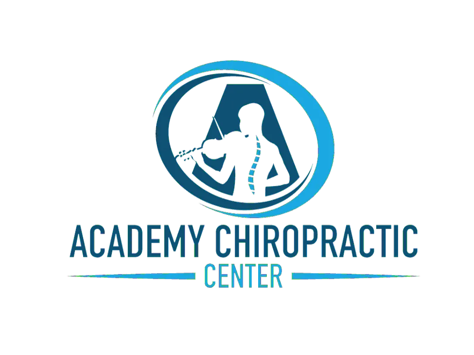
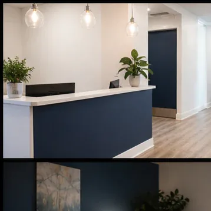
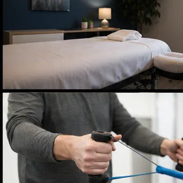

Chiropractic adjustment
Hands-on spinal care built around what your body is actually doing, not a template applied to every patient who walks through the door.
Since 1999, Academy Chiropractic Center has provided high quality chiropractic health care in Center City Philadelphia.
Chiropractic care built around the person in the room.
Hands-on spinal care built around what your body is actually doing, not a template applied to every patient who walks through the door.
Massage and manual work on the muscle that keeps pulling the joint back out of place, so the adjustment has something to hold onto.
Stretching and corrective work you can do at home, so the relief you leave with is still there by your next visit.
A plan for getting back to normal with a beginning and an end, rather than an open ended schedule that never quite finishes.
Ongoing maintenance for people who spend the working day at a desk in Center City and feel it by Thursday afternoon.
A full history and examination before anyone touches your spine, because the complaint you came in with is rarely the whole story.
Located in the heart of Center City, Academy Chiropractic Center is unlike most other medical or chiropractic offices. We strive to replicate the personalized experience of a family practice, where the person treating you knows your history without reading it off a screen. From our inception we have endeavored not only to alleviate pain but to teach patients what caused it, because a patient who understands the cause is the one who stops coming back with the same problem.



No overbooked rooms and no rotating hands. You see the same person on every visit and they remember what your last week looked like, which matters when the pain is tied to how you sit, sleep and work. That continuity is the whole reason this practice has stayed small since 1999.
